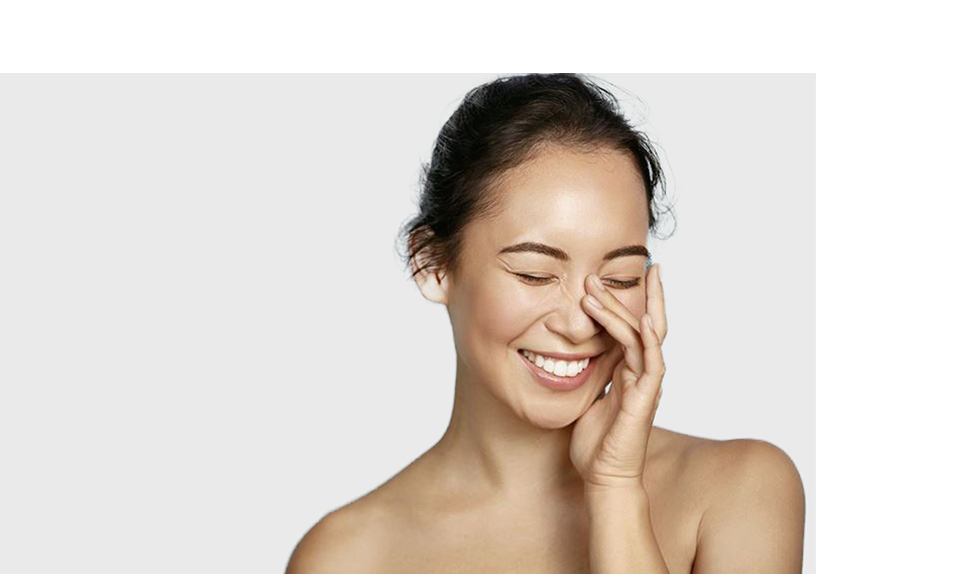
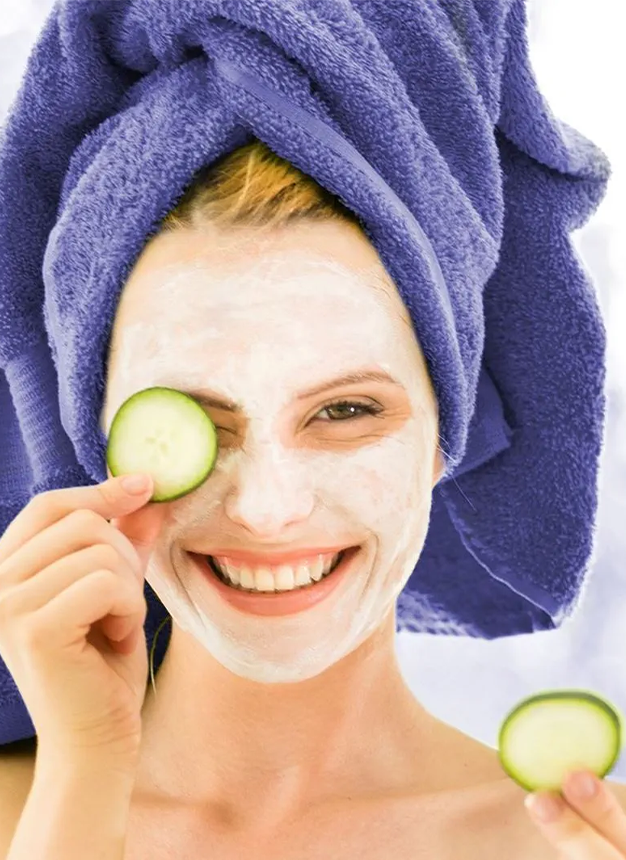

지성 피부를 위한 팁 번들거리는 피부 상태는 종종 피부 트러블로 이어지기도 합니다. 피부 트러블은 우리의 일상에서 걱정의 요인이 되기도 하지요. 하지만 적합한 관리로 지성 피부도 말끔한 얼굴로 가꿀 수 있습니다.

지성 피부는 번들거리는 현상이 빈번히 나타나기도 합니다. 여기에는 다양한 이유가 있습니다. 유전적 소인, 스트레스, 호르몬 변화나 건강하지 않은 생활 방식도 피지선을 자극하고 피부에 문제가 생기게 합니다.
원인과 영향: 피부 트러블이 생기는 이유
피지선은 진피층에 존재하며 모낭과 직접 연결되어 있습니다. 피지선이 피지를 너무 많이 만들어 내면, 모낭이 차고 막히게 되어 트러블이 나타납니다. 그 원인에 대해 더 알고 싶다면 여기를 확인하세요.
지성 피부의 대표적인 특징
번들거리는 피부: 번들거리는 현상이 피부 위의 기름 막처럼 보이기도 합니다. T존의 뾰루지: 이마, 코, 턱에 특히 많이 생깁니다
지성 피부 관리법
지성 피부는 많은 것을 조심해야 하고 케어도 특별하게 해야 합니다. 그래야 피부의 번들거림이 덜하고, 성가신 피부 트러블도 생기지 않습니다. 지성 피부를 가졌다고 해도 지성 피부에 맞는 케어 요법을 따른다면 깨끗한 얼굴을 갖게 될 수 있습니다.
얼굴을 빛나게!
지성 피부라면 항상 수분 크림을 사용해야 합니다. 지성 피부 역시 추위, 열 등의 환경적 영향을 방어해야 하기 때문입니다. 가벼운 액상이나 젤 타입이 좋으며, 진정 성분이 있는 보습제를 사용해야 합니다.
구석구석 씻기
철저한 클렌징은 지성 피부에 특히 중요합니다. 데일리 워시 스크럽을 사용하여 집중적으로 세안해 보세요. 클렌징 후에는 토너로 피부를 진정시켜 주세요. T존은 더 특별하게 관리하세요. 피부 관리에 효과적인 트러블 관리용 제품을 단계별로 사용해 보세요.

케어 팁: 피부 트러블에 대처하는 방법!
자극 줄이기: 열, 마찰, 강한 클렌징을 지양해야 합니다.
번들거림 관리: 매트한 파우더와 오일 프리 메이크업 제품은 얼굴의 번들거리는 현상을 관리하는데 도움이 됩니다. 얼굴이 너무 번들거린다고 느낄 때는 티슈로 톡톡 두드려서 유분을 잡아 주세요.
스크럽과 마스크 팩: 주 2-3회씩 마일드한 스크럽제를 사용하면 얼굴의 각질과 먼지를 제거하는 것을 도와줍니다. 그 후 마스크 팩을 사용해 피부를 진정시키고 보습하세요.
피부 관리실: 얼굴 클렌징을 전문 관리사에게 주기적으로 관리받는 방법도 피부 상태를 지속적으로 개선하는 방법이 될 수 있습니다.
식단이나 식습관 바꾸기: 흡연이나 과도한 스트레스와 같이 건강에 좋지 않은 라이프스타일은 피부에도 부정적인 영향을 줄 수 있습니다. 건강하게 먹고 수분을 많이 섭취해야 합니다.
집에서 하는 천연 치료법
천연 식물도 얼굴의 뾰루지를 치료하는 데 도움을 줄 수 있습니다. 예를 들면 마리골드 꽃잎은 소염 성분을 함유하고 있습니다. 꽃잎을 우린 물에 천을 적셔 피부에 잠시 올려놓으세요. 빠르고 간단한 스팀 클렌징으로 피부 트러블을 관리할 수 있습니다. 뜨거운 물에 카모마일 에센스 몇 방울을 뿌리고 수건으로 머리 위를 덮어 가림막을 만든 후 약 5분 정도 얼굴에 스팀을 쐬어 보세요. 그 후에 클렌징 마스크를 사용하면 피부에 아주 잘 흡수됩니다.